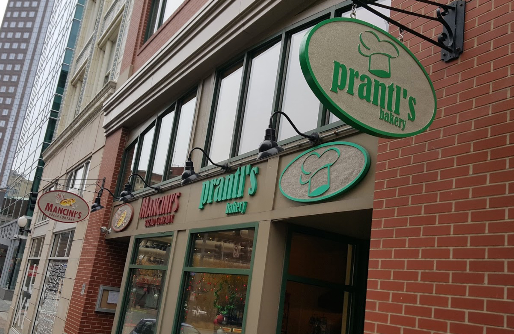
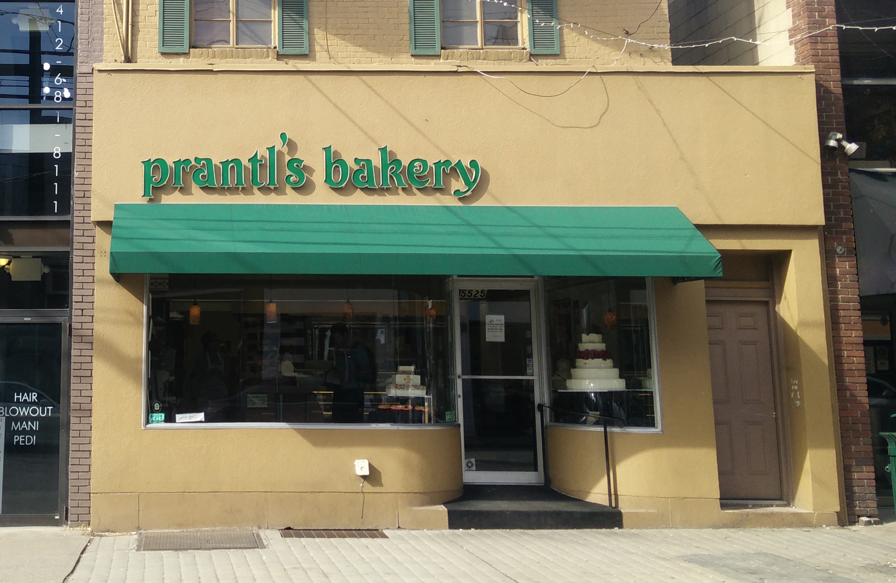

Visit Us!
Downtown
438 Market Street Pittsburgh, PA 15222 |
412-471-6861 |
Email: infoms@prantlsbakery.com |
| Hours of Operation: | |
|---|---|
Monday-Friday: |
7am - 6pm |
Saturday: |
9am - 4pm |
Sunday: |
10am - 3pm |
Walnut St.
Shadyside 5525 Walnut Street |
412-621-2092 |
Email: info@prantlsbakery.com |
| Hours of Operation: | |
|---|---|
Monday: |
9am - 4pm |
Tuesday-Saturday: |
7:30am - 6pm |
Sunday: |
9am - 4pm |
 at Carnegie Mellon by Devansh Kukreja.
at Carnegie Mellon by Devansh Kukreja.